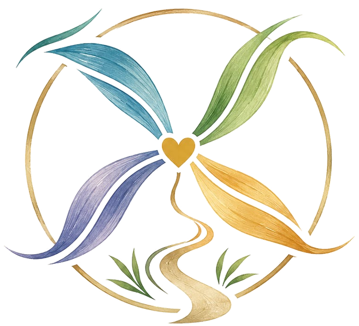

Le Moulin de Laure
Au cœur du lien, au-delà des sens.
Quatre univers pour explorer les liens avec les animaux, les êtres chers et soi-même.


Pourquoi Le Moulin ?
Un chemin de cœur et quatre ailes : le vivant, l’énergie, la famille et les messages que l’on cherche à comprendre.
Rencontrer Laure
Découvrez son parcours, son regard sur le vivant et les valeurs qui accompagnent sa pratique.
À propos de Laure
Comment avancer ?
Découvrir
Parcourez les quatre accompagnements.
Poser une question
Contactez Laure si vous souhaitez une précision.
Prendre rendez-vous
Consultez la page de réservation.
Un cadre d’écoute et de respect
Bienveillance, non-jugement, honnêteté et confidentialité guident les échanges.
Laure ne pose pas de diagnostic médical ou vétérinaire. Les professionnels compétents restent essentiels lorsque la situation le demande.
Le Jardin du Moulin
Un espace pour découvrir les professionnels croisés sur le chemin de Laure, présentés avec leur accord.
Découvrir le JardinPrendre rendez-vous
Vous pouvez consulter la page de réservation pour choisir la suite.
Prendre rendez-vous